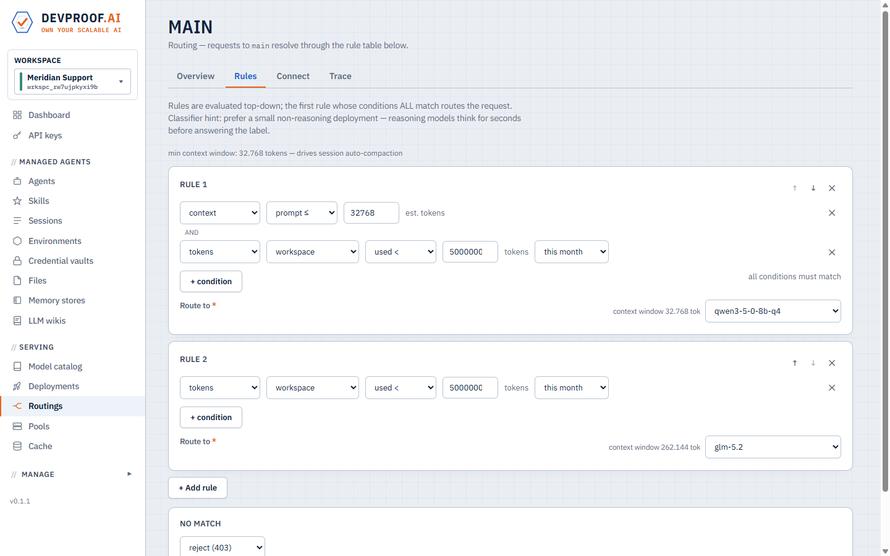
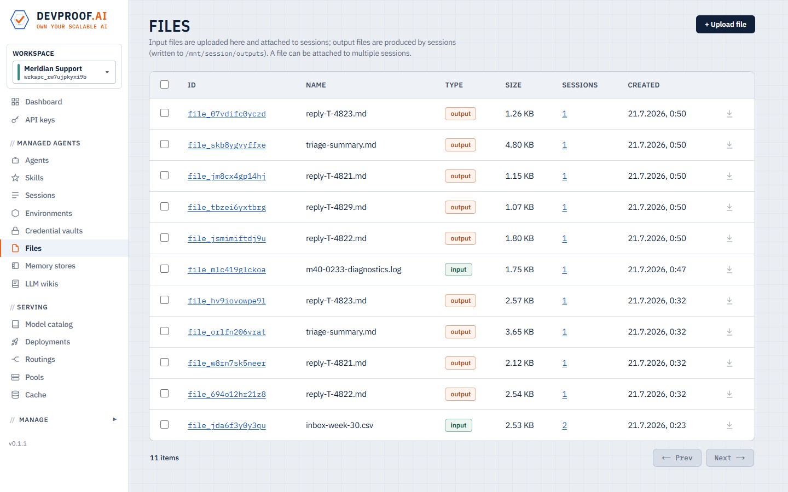

Docs
Getting started
From an empty Kubernetes cluster to a served model and a running agent. Works on docker-desktop; scales to production clusters with the same chart.
Prerequisites
- A Kubernetes cluster — docker-desktop's built-in cluster is enough for a first run.
kubectlandhelm(v3) on your PATH.- For GPU models: nodes with GPUs. CPU-only clusters can serve the smaller catalog models.
1 — Install the platform
One umbrella chart (published as an OCI package) deploys everything: control plane, console, gateway, operator, and bundled Postgres + MinIO — both toggleable, see install options.
helm install devproof oci://ghcr.io/devproof/devproofai-helm \
-n devproof --create-namespaceThis installs the latest published chart. To pin a specific release, add
--version vX.Y.Z.
When the pods are up, expose the console and the model gateway — port-forward in dev, or your ingress / LoadBalancer in production:
kubectl -n devproof get pods
kubectl -n devproof port-forward svc/console 7090:7090 &
kubectl -n devproof port-forward svc/gateway 14000:4000 &
# console → http://localhost:7090 gateway → http://localhost:14000ghcr.io/devproof/* need auth in your
setup, pass --set registryAuth.token=<PAT with read:packages>.2 — Deploy your first model
- Open Serving → Model catalog. Every entry lists parameters, context window, format, and the hardware it needs — including CPU-only options.
- Pick a model and press Deploy. The operator provisions a pool, downloads the weights, and the gateway routes the endpoint when it's warm.
- Watch it under Serving → Deployments until the phase is Ready.
min replicas = 0 sleep when idle and wake on the
first request — the request is held during wake-up, not dropped.3 — Create a routing
Clients never call a deployment directly — they call a routing, a named rule table that resolves each request to a model (and can enforce budgets). The simplest routing has no rules and one terminal:
- Open Serving → Routings → Create routing.
- Name it (say
main) and set the terminal to route to your deployment.
The rule editor makes routings more than a pointer — this table keeps small prompts on the local model while the workspace is under its monthly token budget, sends everything else to the external endpoint, and rejects once the budget is gone:

Rules are evaluated top-down; edits apply live — no restart, no gateway reload.
4 — Call it
Create a key under API keys, then use either dialect — the gateway speaks both:
# OpenAI-compatible
curl http://<gateway>/v1/chat/completions \
-H "Authorization: Bearer dpk_..." \
-d '{"model": "main", "messages": [{"role":"user","content":"hello"}]}'
# Anthropic-compatible
curl http://<gateway>/v1/messages \
-H "Authorization: Bearer dpk_..." \
-d '{"model": "main", "max_tokens": 256,
"messages": [{"role":"user","content":"hello"}]}'The official SDKs work unchanged — only the base URL moves:
# OpenAI SDK (Python)
from openai import OpenAI
client = OpenAI(base_url="http://<gateway>/v1", api_key="dpk_...")
r = client.chat.completions.create(
model="main",
messages=[{"role": "user", "content": "Summarize this incident report…"}],
)
print(r.choices[0].message.content)# Anthropic SDK (Python)
from anthropic import Anthropic
client = Anthropic(base_url="http://<gateway>", auth_token="dpk_...")
msg = client.messages.create(
model="main", max_tokens=1024,
messages=[{"role": "user", "content": "Summarize this incident report…"}],
)
print(msg.content[0].text)Or point a coding agent at it:
export ANTHROPIC_BASE_URL=http://<gateway>
export ANTHROPIC_AUTH_TOKEN=dpk_...
claude --model main5 — Run your first managed agent
- Managed agents → Environments → Create. An environment is the sandbox
profile: which hosts (if any) the agent may reach, pod resources, and whether
/workpersists across turns. Start with no allowed hosts. - Managed agents → Agents → Create. Give it a name, the routing from step 3, a system prompt, tools (Bash, Read, Write, …), and the environment. Optionally add skills, memory, wikis and MCP servers here — see Concepts.
- Sessions → Create session. Pick the agent, write the first prompt, attach input files if you have them, and start.
- Open the session to watch the live transcript — every message, thought and tool call as it happens. Sessions go idle between turns; send a follow-up any time.

The live transcript: the agent loads its skill, reads the attached files, and works.
Files attached to sessions and everything the agent publishes from its outputs directory are browsable — and downloadable — under Files, linked to the sessions that used them:

Inputs and agent-produced outputs, linked to their sessions.
Install options
Agents only — no local model hosting
Don't want to serve models on the cluster? Install without the LLMkube serving engine. Agents, routings, API keys and metering then run purely against external endpoints (OpenAI, Anthropic, OpenRouter, custom) which you add in the console under Deployments → Add endpoint:
helm install devproof oci://ghcr.io/devproof/devproofai-helm \
-n devproof --create-namespace \
--set llmkube.enabled=falseBring your own Postgres
Disable the bundled Postgres and point the platform at your own database:
# values-prod.yaml
postgres:
enabled: false
externalDatabase:
host: pg.internal.example.com
port: 5432
database: devproof
user: devproof
existingSecret: devproof-db # key: password (create before install)
sslMode: requireBring your own S3
Disable the bundled MinIO and use real S3 (or any S3-compatible store). With
auth.mode: podIdentity the control plane uses the pod's AWS identity —
set the IRSA role via the service-account annotation instead of static keys:
# values-prod.yaml
minio:
enabled: false
s3:
endpoint: "" # "" = real AWS S3; or your compatible endpoint
bucket: devproof-files
region: eu-central-1
auth:
mode: podIdentity # or: key + existingSecret
controlplane:
serviceAccount:
annotations:
eks.amazonaws.com/role-arn: arn:aws:iam::123456789012:role/devproof-s3With static keys instead: auth.mode: key plus an
existingSecret holding access-key-id /
secret-access-key.
Exposure & upgrades
- Console, gateway and control plane each accept
<component>.service.{type,annotations,nodePort}for LoadBalancer / NodePort exposure; every component takesresources/nodeSelector/tolerations. helm upgradeneeds--force-conflicts: the control plane co-owns the gateway ConfigMap at runtime, so the field-ownership conflict is expected — the chart re-emits the runtime value verbatim.
Where to go next
- Concepts — workspaces, environments, skills, memory, LLM wikis, delegation, routings, cost tracking.
- API & integrations — the platform API, both gateway dialects, and the Python client.